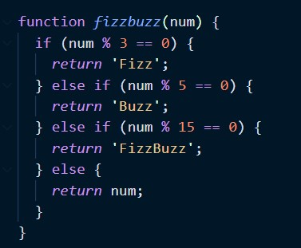
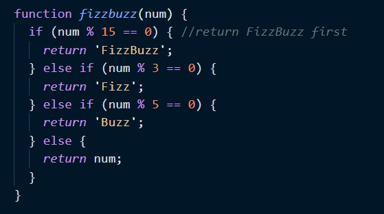

too much fizz not enough buzz...
Hi my non-tech savvy friend! Just finished melting my brain with some javascript functions. I will try to explain this in the simplest terms. If I lose you at any point, just nod and read on.
I was tasked to write a JS function which takes a list of numbers and prints out a specific word for multiples of 3, 5 and 15. So the goal was this:

I brewed a coffee and got to work using a couple of different problem-solving techniques - I'll touch on those in the next section below. But here is the code I came up with:

Of course it didn't work. Never ever works the first time. It was saying the function is to return the word 'Fizz'
for multiples of both 3 AND 5.
So now I went for a deep dive into a Google rabbit hole searching for meaning and ternary operators that
tell the computer to do something specific if two conditions are both TRUE.
Didn't work. Same error.

I was getting nowhere. I ended up having to consult the answers provided because I just could not work this one out. Guess what? Of course it came down to control flow! As in the order in which javascript executes/performs tasks.
The computer reads it from top-to-bottom so it meant I had to change what condition runs first. Hooray! Happy days! Fizzbuzzzzzz
